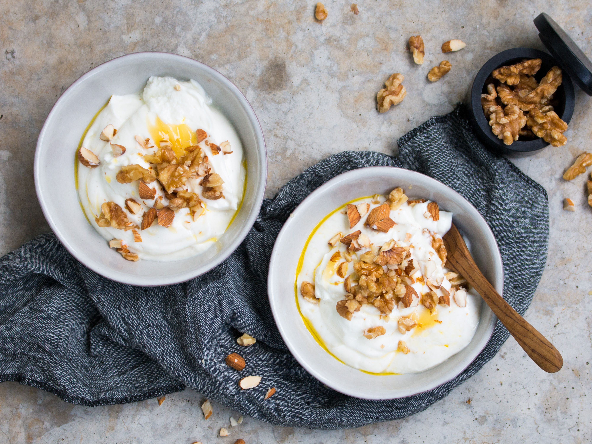

Skyr with Honey and Nuts

A perfect scandinavian dessert!
Skyr is a traditional Icelandic dairy product (kind of a yogurt), pretty high in protein.
Ingredients
- Skyr
- Honey
- Mixed nuts, chopped
- Berries (optional)
Steps
- Put skyr in a bowl.
- Top it with some honey (you can mix it in if you like).
- Add some chopped nuts of choice.
- Serve immediately.